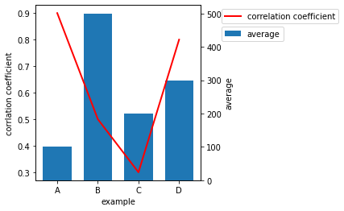

共通のx軸に二つのプロットを表示する#
%matplotlib inline
from matplotlib import pyplot as plt
data_x = [100, 200, 300, 400] #数値は適当
plot_data = [0.9, 0.5, 0.3, 0.8] #数値は適当
bar_data = [100, 500, 200, 300] #数値は適当
data_x_label = ['A', 'B', 'C', 'D'] #x軸を数値でなく、文字列にしたいとき用
fig, ax1 = plt.subplots() #Figureオブジェクト fig と一つ目のAxesオブジェクト ax1 を作成
ax2 = ax1.twinx() #二つ目のAxesオブジェクト ax2 と ax1 を連結する
fig.subplots_adjust(right=0.6) #凡例のために右の余白を広くしておく
ax1.plot(data_x, plot_data, linewidth=2, color='red', label='correlation coefficient') #ax1に折れ線グラフを作成
ax2.bar(data_x, bar_data, width=70, label='average') #ax2に棒グラフを作成。widthはx軸のデータ間隔を考慮して指定するとよい
ax1.set_zorder(2) #ax1のzorderを指定。ax1を手前にする。
ax2.set_zorder(1) #ax2のzorderを指定。ax2を後ろにする。
ax1.patch.set_alpha(0) #ax1の図を透過させる。そうしないと奥のax1が見えなくなるため。
ax1.legend(bbox_to_anchor=(1.1,1),loc='upper left',borderaxespad=0.5, fontsize=10) #ax1の凡例の位置を指定
ax2.legend(bbox_to_anchor=(1.1,0.9),loc='upper left',borderaxespad=0.5, fontsize=10) #ax2の凡例の位置を指定
ax1.set_xlabel('example')
ax1.set_xticks(data_x) #x軸の目盛りはデータが存在するところだけ表示させるようにする
ax1.set_xticklabels(data_x_label) #x軸の数値に意味がない場合、文字列を表示させてもよい。この場合でもset_xticks()は必要
ax1.set_ylabel('corrlation coefficient')
ax2.set_ylabel('average')
plt.show()
plt.close()

pyplotモジュール **subplots()**メソッド
・図のサイズ、配置等を指定する。
・戻り値はFigureオブジェクトとAxesオブジェクト。
・**figsize=()**のデフォルトは(6.4,4.8)
pyplotモジュール **subplots_adjust()**メソッド
・余白のサイズを指定する。
・**subplots_adjust(right=0.7)**のように余白の位置と、余白の開始位置を指定する。
・rightのデフォルトは0.9
twinx()
・二つのAxesオブジェクトを連結する。
set_zorder()
・どちらのAxesオブジェクトを手前にするか指定する。数値が後の方が手前にくる。
patch.set_alpha
・図の透過度を指定する。0は透明。1は透過しない。
legend()
・**bbox_to_anchor(x,y)**で凡例の座標を指定。(0,0)が図の原点。(1,1)だと図の右上。1超えてもよい。
・locは凡例のどの部分を**bbox_to_anchor(x,y)**で指示した座標に置くか指定する。upper rightにすると凡例の枠の右上が指定した座標にくるように配置される。centerだと凡例の中央。
・borderaxespadで図の枠と凡例の枠の距離を指定する。0だと図の枠と凡例の枠が接する。
set_xlabel(), set_ylabel()
・x軸、y軸のラベルをつける。
・Axesオブジェクト用
set_xticks(), set_yticks()
・x軸、y軸の目盛りの設定をする。
・Axesオブジェクト用
set_xticklabels()
・x軸のラベルを指定する
・Axesオブジェクト用
凡例の位置を上にしても見栄えがよくていいかも。
ax1.legend(bbox_to_anchor=(1,1.1),loc=’lower right’, borderaxespad=0 , fontsize=10) #ax1の凡例の位置を指定
ax2.legend(bbox_to_anchor=(1,1),loc=’lower right’, borderaxespad=0, fontsize=10) #ax2の凡例の位置を指定